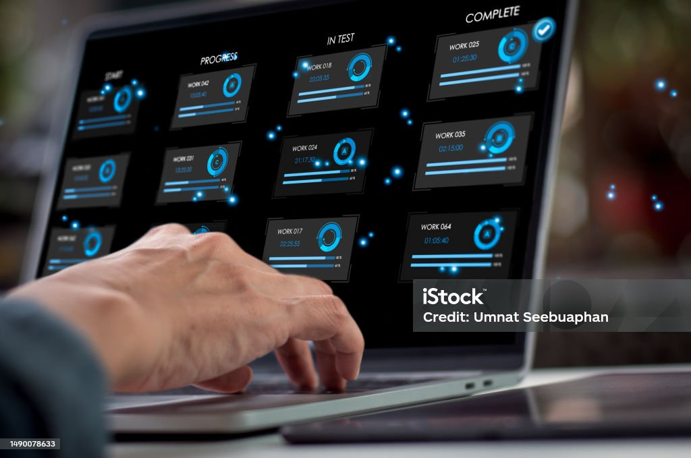

Présentation du projet

Le projet consiste à mettre en place une infrastructure complète qui facilite les processus de développement logiciel. Nous utilisons une combinaison d'outils modernes tels que Docker pour la virtualisation, Kubernetes pour l'orchestration des conteneurs, et Jenkins pour l'intégration continue.
Cette solution permet aux équipes de développement et d'opérations de collaborer efficacement pour automatiser les déploiements, assurer la scalabilité et surveiller les performances en temps réel.